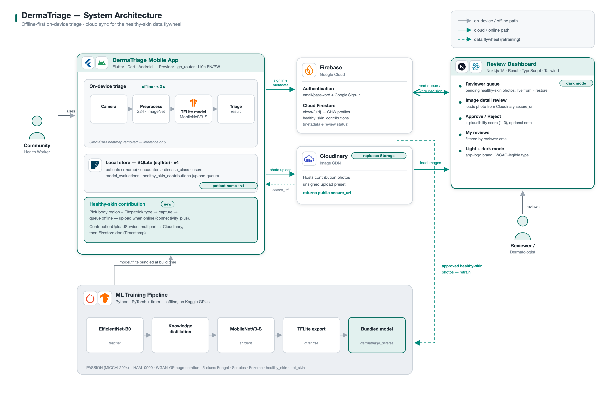
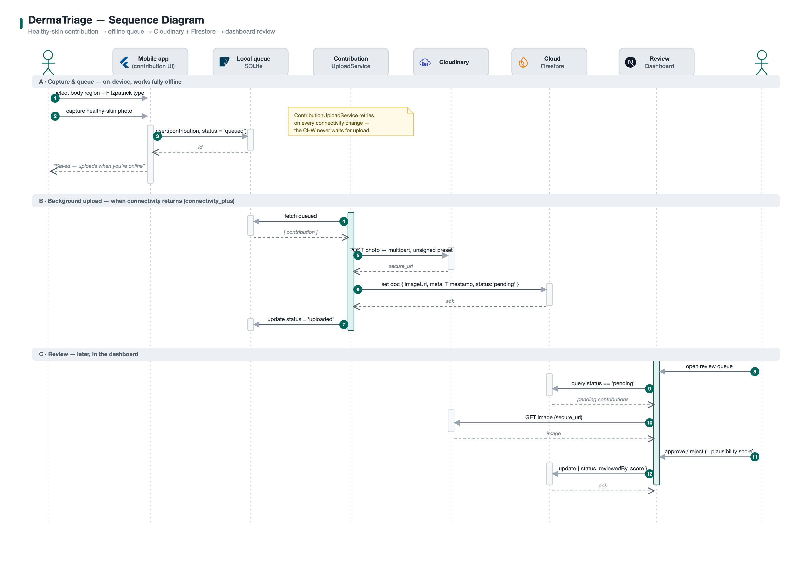
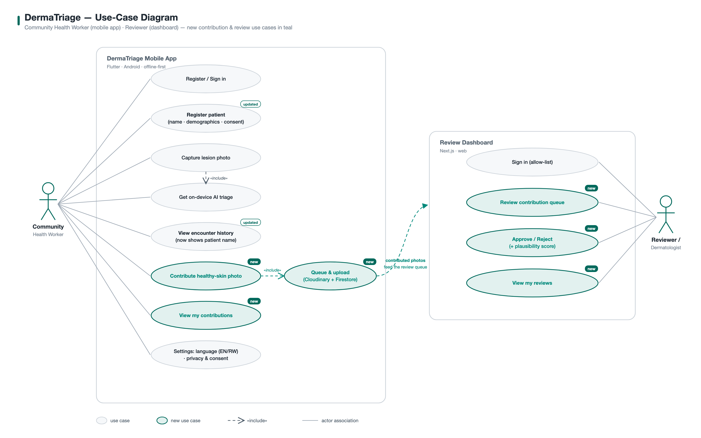

You said you haven't written Flutter in a while and have never worked on a project this size. Both of those are completely normal, and neither is a real obstacle — this document exists so you don't have to hold the whole codebase in your head before you can be productive in it.
This is not release documentation and it is not a tutorial about Flutter in general. It is a guide to this specific codebase: what every non-trivial file does, why it's shaped the way it is, and — just as importantly — what you can safely ignore. A few pieces of advice on how to read it:
dermatriage/flutter_app/ unless stated otherwise, since that's the project you'll spend the most time in.One last thing, because it matters for how much you trust this document: everything in it was produced by directly reading the source files in this repository — not from memory, not from the original project proposal, and not by guessing at what a typical Flutter app "usually" looks like. Where the code and a comment disagree, or where something is unused dead weight, that's called out explicitly rather than smoothed over.
DermaTriage is an Android app that helps a Community Health Worker (CHW) — someone with basic training, not a dermatologist — decide what to do about a patient's skin condition, using a photo and an on-device AI model. No internet connection is required for the actual triage: photo in, model runs on the phone's own processor, decision out.
The model recognizes five classes:
| Class | Meaning | Triage outcome |
|---|---|---|
fungal | Fungal (dermatophyte/ringworm) infection | Diagnosis — Treat Locally |
scabies | Scabies (WHO neglected tropical disease) | Diagnosis — Treat Locally |
eczema | Eczema / dermatitis | Diagnosis — Monitor |
healthy_skin | No disease detected | Rejection — nothing to triage |
not_skin | Photo isn't a skin lesion at all (wall, object, etc.) | Rejection — ask for a retake |
Three ideas run through almost every design decision in this codebase, and keeping them in mind will make a lot of otherwise-mysterious code make sense immediately:
The repository root (dermatriage/) contains three genuinely separate projects that happen to share a domain. You will spend nearly all of your time in the first one.
The Android/iOS app itself. Flutter + Dart. This is the subject of essentially this entire document.
A Python project — PyTorch training code, a knowledge-distillation pipeline (a large teacher model's knowledge compressed into the small MobileNetV3-Small model that actually ships), TFLite conversion scripts, and evaluation notebooks. You will occasionally need to look here (Chapter 23 walks through a real example), but you will not be asked to write Python as part of normal Flutter work.
A separate Next.js/React web app used by a human reviewer (a dermatologist) to approve or reject the "healthy-skin contribution" photos volunteers submit through the mobile app (see Chapter 17). It reads from the same Firestore project the Flutter app writes to, but the two codebases never import each other — they only agree on a shared data contract, documented in docs/review_dashboard_schema.md.
flutter_app/, check whether you're actually looking for a concept that lives in one of the other two projects instead (e.g. anything about "reviewing" or "approving" a contribution photo — that logic lives entirely in review_dashboard/, not in the app).Everything below is under flutter_app/.
lib/
├── main.dart entry point: Firebase init, Provider tree, MaterialApp
├── firebase_options.dart generated by `flutterfire configure` — don't hand-edit
├── core/
│ ├── constants/ app-wide constants: model config, disease taxonomy, legal text
│ ├── router/ go_router route table + the auth redirect guard
│ └── theme/ colors, shadows/radius/spacing tokens, ThemeData
├── data/
│ ├── models/ plain data classes with toMap()/fromMap() for SQLite
│ ├── datasources/
│ │ ├── local/ DatabaseHelper + one DAO per table
│ │ ├── ml/ image preprocessing, the TFLite wrapper, triage decision logic
│ │ └── reference/ the case-retrieval reference bank loader
│ └── (see also domain/entities/ — unused, explained in Ch. 15)
├── domain/
│ └── entities/ dead code — no file in the app imports this folder
├── l10n/
│ └── app_localizations.dart hand-rolled EN/RW string tables (not Flutter's gen-l10n)
├── presentation/
│ ├── providers/ one ChangeNotifier per feature area — the state layer
│ ├── screens/ one folder per feature area, one file per screen
│ └── widgets/ reusable pieces, grouped the same way as screens/
└── services/
├── auth/ Firebase Auth + Firestore CHW profile calls
├── contribution/ background upload queue for contribution photos
├── inference/ orchestrates preprocess → model → decision
└── retrieval/ the case-retrieval query service
test/
├── unit/ DAOs, retrieval scoring — no widget tree involved
├── widget/ pump a widget, assert on what's on screen
├── integration/ runs the *real* TFLite model on *real* images
├── golden/ renders a screen to a PNG for visual review (see Ch. 30)
└── *.dart a few top-level tests (router redirect, localization, legal)
assets/
├── models/ the bundled .tflite file(s) + model_version.txt
├── reference/ reference_bank.json (embeddings only — see Ch. 22)
├── images/, fonts/, icon/ static assets
lib/domain/entities/ looks like it should be the "real" architecture (a classic clean-architecture domain layer) and lib/data/models/ looks like an implementation detail underneath it. It's the opposite: nothing imports domain/entities/ at all. It's a leftover from an earlier structural idea that was abandoned. Chapter 15 shows you exactly how to prove this to yourself in ten seconds with grep, which is a technique you'll want for this codebase generally.Reading a project's dependency list before its code is an underrated way to understand what it actually does. Here is every non-Flutter-SDK package this app depends on, grouped by what it's for:
| Package | Used for |
|---|---|
firebase_core, firebase_auth, cloud_firestore | CHW account sign-in/registration (online), plus a small Firestore profile document per CHW (region/facility) that Firebase Auth itself can't store. |
tflite_flutter | Runs the bundled .tflite model on-device. Pinned to ^0.11.0 specifically because 0.10.x used an API removed in newer Dart — see the comment in pubspec.yaml. |
image | Pure-Dart image decode/resize library used to turn a JPEG into the normalised tensor the model expects (Chapter 19). |
camera, permission_handler | Live camera preview and capture, and the runtime permission prompt. |
provider | The entire state-management layer (Chapter 10). This is the one to understand deeply — nearly every screen touches it. |
sqflite, path, path_provider | The on-device SQLite database and file-system paths (Chapters 12–14). |
shared_preferences | Tiny key-value storage — used for the saved language choice and "has this device already accepted the consent dialog" flag. Deliberately not a full database table for either. |
go_router | Declarative routing + the login-gate redirect logic (Chapter 11). |
flutter_svg | Renders the app logo from an inline SVG string (see app_logo.dart) rather than a PNG asset, so it's crisp at every size. |
uuid | Generates the string IDs for patients, encounters, and contributions. |
intl | Only used for DateFormat (e.g. formatting an encounter's date in History) — the app's own strings are not managed by intl's usual gen-l10n workflow (Chapter 27 explains why). |
connectivity_plus | Detects when the device regains network access, to retry queued contribution uploads (Chapter 17). |
http | A single use: the multipart upload to Cloudinary for contribution photos. |
dev_dependencies entry declared, flutter_test — but the test suite also uses sqflite_common_ffi for the DB tests. That's a transitive/implicit dependency worth knowing about if a test ever complains it can't find that package; run flutter pub get and check pubspec.lock rather than assuming it's missing from pubspec.yaml by mistake.A five-minute re-orientation, since you said Flutter's been a while.
Everything on screen in Flutter is a widget — a small, immutable description of "what should be here", not the pixels themselves. Widgets come in two flavours you'll see constantly in this repo:
Has no memory of its own. Given the same constructor arguments, it always describes the same UI. Example — lib/presentation/widgets/result/confidence_bar.dart:
class ConfidenceBar extends StatelessWidget {
final String diseaseName;
final double confidence; // 0–1
final Color color;
const ConfidenceBar({ super.key, required this.diseaseName,
required this.confidence, required this.color });
@override
Widget build(BuildContext context) {
// ... reads this.diseaseName / this.confidence / this.color and
// returns a Column with a Text and a LinearProgressIndicator.
}
}
Nothing inside this class ever changes after construction. If the confidence needs to visually update, the parent throws away this widget instance and builds a new ConfidenceBar with a new number — which sounds wasteful but is exactly how Flutter is designed to work; rebuilding a widget is cheap, and the framework diffs the result against what's already on screen and only touches the pixels that actually changed.
Has a companion State object that survives across rebuilds and can hold mutable fields. Example — the login form, lib/presentation/screens/auth/login_screen.dart:
class LoginScreen extends StatefulWidget {
const LoginScreen({super.key});
@override
State<LoginScreen> createState() => _LoginScreenState();
}
class _LoginScreenState extends State<LoginScreen> {
bool _submitting = false; // <- lives in the State, not the widget
Future<void> _onLogin() async {
setState(() => _submitting = true); // <- tells Flutter to rebuild
final error = await AuthProvider.instance.service.signIn(...);
...
}
}
setState(() { ... }) does two things: it runs the closure (which mutates a field like _submitting), and it tells Flutter "the next time you build a frame, call build() on me again." If you mutate a field without calling setState, the value changes but the screen doesn't visually update until something else happens to trigger a rebuild — a very common first bug when returning to Flutter after a break.
StatefulWidget that creates a TextEditingController or subscribes to something (a stream, an AnimationController, a CameraController) must dispose of it in dispose(), or you leak it every time the screen is popped. Search this codebase for void dispose() and you'll see the pattern repeated in every form screen and both camera screens.Nearly every I/O operation in this app — reading a file, querying SQLite, calling Firebase, running the model — is asynchronous, represented by a Future<T> (a value of type T that will exist eventually, or fail). The pattern you'll see everywhere:
Future<void> runTriage() async {
...
try {
_result = await _inferenceService.runTriage(image); // suspends here
_state = TriageState.done;
} catch (e) {
_error = e.toString();
_state = TriageState.error;
}
notifyListeners();
}
Three things specific to this codebase worth internalising:
A very common Flutter-specific bug: capturing a BuildContext before an await, then using it after — the widget might have been unmounted (user navigated away) while you were waiting. You'll see two idioms guarding against this throughout the codebase:
if (!mounted) return; // inside a State, after every await if (!context.mounted) return; // inside a plain function given a context
and, in result_screen.dart's _saveEncounter, providers are deliberately read before the first await and stored in locals:
final TriageProvider triage = context.read<TriageProvider>(); final HistoryProvider history = context.read<HistoryProvider>(); ... await history.saveEncounter(encounter); // now safe to use `triage`/`history` after if (!mounted) return; triage.reset();
ContributionUploadService.syncPending() can be called from several places at once (app start, connectivity change, a manual refresh) — it guards itself with a plain boolean:
bool _syncing = false;
Future<void> syncPending() async {
if (_syncing) return;
_syncing = true;
try { ... } finally { _syncing = false; }
}
Sometimes the code deliberately does not want to wait — e.g. queuing a contribution should return immediately, with the network upload happening in the background:
Future<void> enqueue(HealthySkinContribution contribution) async {
await _dao.insert(contribution);
unawaited(syncPending()); // don't block on the network
}
The unawaited() helper here is hand-written at the bottom of contribution_upload_service.dart (a one-line no-op function) rather than pulling in a package, purely to avoid an extra dependency for one function.
Dart's type system distinguishes types that can be null from ones that can't. String can never be null; String? can be null-or-a-string. You'll see this constantly:
| Syntax | Meaning |
|---|---|
String? name | Nullable field/variable. |
value! | "I promise this isn't null right now" — crashes if you're wrong. Used sparingly and deliberately in this codebase (e.g. result.triageLevel! in _buildResult, immediately after a comment explaining why it's guaranteed non-null there). |
value ?? fallback | "Use value, or fallback if it's null." Seen everywhere, e.g. pred.disease?.displayName ?? _rejectionLabel(pred.outcome). |
value?.method() | Call method() only if value isn't null; the whole expression is null otherwise. |
late final Foo x; | "I'll definitely assign this before anyone reads it, trust me" — used for fields set in initState(). |
This app follows a conventional, informal layering — not a strict Clean Architecture with enforced boundaries, but a consistent habit:

Screen (presentation/screens) │ reads/calls ▼ Provider (presentation/providers) — a ChangeNotifier holding UI state │ delegates to ▼ Service (services/*) — orchestrates a use case │ uses ▼ DAO / datasource (data/datasources/*) — talks to SQLite, TFLite, or the bundled JSON │ reads/writes ▼ Model (data/models/*) — plain data + toMap()/fromMap()
Concretely, running a triage flows like this:
CameraScreen.capture()
→ TriageProvider.setCapturedImage(file)
→ (on ResultScreen) TriageProvider.runTriage()
→ InferenceService.runTriage(file)
→ ImageProcessor.preprocess(bytes) // data/datasources/ml
→ SkinTriageInterpreter.run(tensor) // data/datasources/ml
→ DiseaseClassMapper.mapLogits(logits) // data/datasources/ml
← TriageResult // data/models
← TriageProvider._result set, notifyListeners()
→ ResultScreen rebuilds via Consumer<TriageProvider>
Nothing here is enforced by the compiler — a screen could reach directly into a DAO, and nothing would stop it. The discipline is a convention the codebase follows consistently, which is worth knowing precisely because it means you can trust the pattern when reading new code, but shouldn't assume a hard rule if you ever see it broken.
This app's entire state-management story is the provider package wrapping Flutter's own ChangeNotifier/InheritedWidget machinery. There is no Riverpod, Bloc, GetX, or Redux here — if you've used any of those, Provider is the simplest of the popular options, and this app uses it about as plainly as it can be used.
A ChangeNotifier is a class that can call notifyListeners() whenever its internal state changes. Any widget wrapped by a ChangeNotifierProvider higher in the tree can then either:
context.read<TriageProvider>() — used inside callbacks (button presses), never inside build().context.watch<AuthProvider>() — used inside build(), e.g. in HomeScreen to reactively show the signed-in CHW's name.watch, but scoped to a small subtree so only that part rebuilds, e.g. Consumer<TriageProvider> in ResultScreen.context.watch inside a callback (not inside build) throws at runtime. Calling context.read inside build compiles fine but is a bug — that widget will never rebuild when the value changes. The mnemonic used consistently in this repo: watch in build, read everywhere else.All app-wide providers are created once, in main.dart, inside a MultiProvider:
MultiProvider(
providers: [
ChangeNotifierProvider<AuthProvider>.value(value: AuthProvider.instance),
ChangeNotifierProvider<LocaleProvider>.value(value: localeProvider),
ChangeNotifierProvider<TriageProvider>(create: (_) => TriageProvider()..init()),
ChangeNotifierProvider<PatientProvider>(create: (_) => PatientProvider()),
ChangeNotifierProvider<HistoryProvider>(create: (_) => HistoryProvider()),
ChangeNotifierProvider<ContributionProvider>(create: (_) => ContributionProvider()),
],
child: ...
)
Two constructor styles appear above, and the difference matters: .value(value: AuthProvider.instance) hands the tree an already-existing singleton (so the same AuthProvider instance is shared with the router's redirect guard — see Chapter 11); create: (_) => TriageProvider() asks Provider to construct a fresh instance and own its lifecycle (disposing it automatically when removed from the tree).
presentation/providers/auth_provider.dartA singleton (AuthProvider.instance), not created via the constructor — because app_router.dart's GoRouter needs to listen to the exact same instance the widget tree does, and a router is constructed as a top-level final outside of any widget's build(). It doesn't hold its own copy of the signed-in user; it wraps FirebaseAuth.instance.authStateChanges() and just calls notifyListeners() whenever Firebase's own state changes, exposing convenience getters (isLoggedIn, displayName, ...).
presentation/providers/triage_provider.dartThe single most important provider to understand — see Chapter 18 for the full walk-through. In short: it holds the captured image, the current TriageState (idle/processing/done/error), the TriageResult once inference finishes, and — added later — the case-retrieval result, which it fetches after the triage result is already shown, so retrieval latency never delays the CHW seeing a diagnosis.
presentation/providers/patient_provider.dartHolds the "currently active" patient for an in-progress encounter and a list of recently registered patients. Deliberately tiny — three methods, no business logic beyond delegating to PatientDao.
presentation/providers/history_provider.dartLoads every saved Encounter plus a lookup map of every Patient by id (patientFor(patientId)), so the History screen can show "Jane Doe — Eczema — 3 days ago" without a join query — SQLite here is used purely as row storage, and the "join" happens in Dart.
presentation/providers/contribution_provider.dartDrives the separate "contribute a healthy-skin photo" research flow (Chapter 17): submitting a new contribution and refreshing the local upload-status list.
presentation/providers/locale_provider.dartThe simplest provider in the app — a Locale plus persistence via SharedPreferences. Notice it is not constructed inside MultiProvider like the others; it's constructed and await localeProvider.load()-ed in main() before runApp() is even called, specifically so the very first frame already renders in the CHW's previously-chosen language instead of flashing English first.
main.dart and find the line await localeProvider.load();. Notice it's one of only two awaits in the whole main() function (the other is Firebase.initializeApp) — everything else about starting the app is synchronous or fire-and-forget (ContributionUploadService.instance.startAutoSync() is called without await, deliberately, so a slow network check can't delay first paint).Routing uses go_router, a declarative router where every screen has a URL-like path (/login, /camera, /result, ...) defined once in a route table, rather than the older Navigator 1.0 style of manually pushing MaterialPageRoutes everywhere (though a few screens — HistoryScreen, ContributionMetadataScreen — do still use a plain Navigator.push(MaterialPageRoute(...)) for a sub-flow that doesn't need a named, deep-linkable route of its own).
The interesting part is the redirect guard in core/router/app_router.dart, and it's a genuinely nice piece of design worth studying:
String? resolveRedirect({required bool loggedIn, required String location}) {
if (!loggedIn && !_unauthenticatedRoutes.contains(location)) return '/login';
if (loggedIn && _authOnlyRoutes.contains(location)) return '/';
return null;
}
final GoRouter appRouter = GoRouter(
refreshListenable: AuthProvider.instance,
redirect: (context, state) => resolveRedirect(
loggedIn: AuthProvider.instance.isLoggedIn,
location: state.matchedLocation,
),
routes: [...],
);
Two things to notice:
resolveRedirect), deliberately pulled out of the redirect: callback so it can be unit-tested with plain booleans and strings — no real Firebase session, no widget tree needed. See test/app_router_redirect_test.dart.refreshListenable: AuthProvider.instance is what makes login/logout actually navigate anywhere: GoRouter re-runs its redirect logic every time the given Listenable calls notifyListeners() — which is exactly what AuthProvider does whenever Firebase's auth state changes. There's no explicit context.go('/login') call anywhere for the "signed out elsewhere" case; the router notices on its own.Legal pages (/legal/privacy, /legal/terms) are deliberately in the unauthenticated-allowed set and excluded from the auth-only bounce set — a signed-in CHW must still be able to open them from Settings, and the first-launch consent dialog (shown before any sign-in) needs to link to them too.
Local persistence is SQLite via the sqflite package. Everything routes through one singleton, DatabaseHelper (data/datasources/local/database_helper.dart):
class DatabaseHelper {
DatabaseHelper._();
static final DatabaseHelper instance = DatabaseHelper._();
Database? _db;
Future<Database> get database async {
_db ??= await _initDb();
return _db!;
}
...
}
The ??= here is the entire "lazy singleton" pattern: the first caller triggers _initDb() (which opens the file and runs migrations); every subsequent caller gets the already-open handle instantly. PRAGMA foreign_keys = ON is set in onConfigure, which matters because SQLite does not enforce foreign keys by default — without this line, the ON DELETE CASCADE on encounters.patient_id would silently do nothing.
| Table | Purpose | Key columns |
|---|---|---|
patients | One row per registered patient | patient_id (PK, UUID), name, fitzpatrick_type, consent_given, photo_consent |
disease_classes | Static reference table, seeded from kDiseaseClasses at create time | disease_id, disease_name, triage_level, icd10_code |
encounters | One row per completed triage that the CHW saved | encounter_id (PK), patient_id (FK), predicted_class, confidence_score, triage_category, retrieval_top1_label/_similarity/_agreement |
model_evaluations | Reserved for logging model accuracy metrics — not currently written to by any code path found in this repo | eval_id, model_version, accuracy_overall |
users | Vestige of an earlier offline CHW-authentication design | username, password_hash (bcrypt), security_question |
healthy_skin_contributions | Local upload queue for the contribution flow | id, local_photo_path, sync_status |
users is currently unusedThe users table and its bcrypt password-hashing scheme were built for an offline CHW login design (the comment in app_constants.dart even documents securityQuestions for an offline "forgot password" flow). The app that actually ships now authenticates online via AuthService/Firebase (Chapter 16) — check lib/services/auth/ and you'll find no reference to a local UserDao or the users table at all. The table is still created (_createUserTable runs in both _onCreate and the v2 migration) but nothing in the current app reads or writes it. This is the same category of "looks load-bearing, isn't" trap as domain/entities/ in Chapter 15 — always verify with grep before assuming a table matters.disease_classes is populated once, at create time, directly from the Dart constant kDiseaseClasses (core/constants/disease_classes.dart) — the database table is a mirror of that constant, not an independent source of truth. If you ever need to change a disease's ICD-10 code or description, you edit the Dart constant; the table only matters for whatever future feature might want to query disease metadata with SQL instead of Dart.
SQLite migrations in this app follow the standard sqflite dual-path pattern, and understanding the split between the two methods is the single most important thing to get right before touching the schema:
openDatabase( path, version: AppConstants.databaseVersion, // currently 5 onCreate: _onCreate, // <- runs ONLY for a brand-new, empty database file onUpgrade: _onUpgrade, // <- runs ONLY when an EXISTING file's stored version < current )
_onCreate always builds the current, full schema — including every column ever added by every migration. A fresh install (or the test suite's in-memory database) never runs any of the if (oldVersion < N) branches in _onUpgrade. Those only fire on a real device that already has an older installed copy of the app. If you add a new column to a table, you must add it in two places: the CREATE TABLE in _onCreate, and an ALTER TABLE ... ADD COLUMN guarded by if (oldVersion < N) in _onUpgrade. Forgetting the second one only breaks upgrades from an already-shipped version — which a fresh flutter run during development will never catch, because it always exercises _onCreate.The full migration history, and why each one exists:
| Version | Added | Why |
|---|---|---|
| v2 | users table | The (now-unused — see Ch. 12) offline-authentication design. |
| v3 | healthy_skin_contributions table | The contribution upload queue (Ch. 17). |
| v4 | patients.name column | Before this, History showed only date + classification, with no way to tell whose encounter it was. |
| v5 | encounters.retrieval_top1_label, _similarity, _agreement | The case-retrieval feature (Ch. 22) — nullable, since retrieval only ever runs for diagnosable classes. |
Every added column across every migration is nullable (or has a default), and deliberately so — sqflite/SQLite's ALTER TABLE ADD COLUMN can't populate historical rows with a computed value, so the schema is designed such that old rows simply read back as null for a field that didn't exist yet, and every piece of code that reads that field is written to tolerate null (see Encounter.fromMap, which never assumes the new v5 fields are present).
Every table gets exactly one Data Access Object — a thin class whose only job is turning SQL rows into typed Dart objects and back. All five follow an identical shape; once you've read one, you've effectively read all of them. PatientDao in full:
class PatientDao {
static const String _table = DatabaseHelper.tablePatient;
Future<Database> get _db async => DatabaseHelper.instance.database;
Future<int> insertPatient(Patient patient) async {
final db = await _db;
return db.insert(_table, patient.toMap(),
conflictAlgorithm: ConflictAlgorithm.replace);
}
Future<Patient?> getPatient(String id) async { ... }
Future<List<Patient>> getAllPatients() async { ... }
Future<int> updatePatient(Patient patient) async { ... }
Future<int> deletePatient(String id) async { ... }
}
ConflictAlgorithm.replace on every insert is doing double duty as an upsert — inserting a row whose primary key already exists overwrites it rather than throwing, which is why you'll never see a separate "upsert" method anywhere in this codebase.
Providers never touch sqflite directly — always through a DAO. This is the one architectural boundary in this codebase that's actually consistent everywhere: grep for import 'package:sqflite/sqflite.dart' and every hit is inside data/datasources/local/.
The five model classes in data/models/ (Patient, Encounter, TriageResult, HealthySkinContribution, ReferenceCase) all follow the same shape: plain fields, a toMap(), a fromMap(Map) factory, and usually a copyWith(...). None of them use a code-generation package (no freezed, no json_serializable) — every method is hand-written.
Sitting right next to data/models/ is lib/domain/entities/, containing encounter.dart, patient.dart, and triage_result.dart — names that exactly mirror the model files. If you've seen "clean architecture" before, this looks exactly like where it should live: a domain layer the data layer maps onto. It's actually unreferenced anywhere in the app. Here's the exact check that proves it, and it's worth doing yourself once so you trust the technique for the next mystery file you find:
$ grep -rln "domain/entities\|package:dermatriage/domain" lib/ test/ (no output)
Zero hits. No file imports anything under domain/. It's very likely the start of an earlier architectural pass that was abandoned once the simpler data/models/ classes did the job directly. It's harmless to leave alone, but don't spend time trying to figure out how it's wired in — it isn't.
grep command yourself against any file or folder you're unsure is actually used, before you invest time understanding it deeply. It takes five seconds and will save you from over-studying dead code more than once.The single idea that makes the whole authentication design work is this comment from auth_provider.dart:
FirebaseAuth.currentUser is restored without network access — the app opens straight into the triage features offline."Concretely: AuthService.signIn()/register() need internet the first time (they're real network calls to Firebase Auth). But Firebase's own SDK caches the resulting session token on-device. Every subsequent app launch, FirebaseAuth.instance.currentUser reads that cached session synchronously from local storage — no network round-trip — so AuthProvider.isLoggedIn is true immediately, the router lets the CHW straight into the triage screens, and nothing about capturing a photo, running the model, or saving an encounter ever touches Firebase at all.
The only things that genuinely require the network are: signing in or registering for the first time, resetting a forgotten password, and any edit on the Profile screen (name/region/facility/email/password) — because those all mutate the server-side account.
Firestore's role is narrow: a chws/{uid} document per CHW holding the two fields Firebase Auth itself has no slot for (region, facility), plus the healthy_skin_contributions collection described next chapter.
Separate from triage entirely, CHWs can volunteer a photo of healthy skin (with metadata: Fitzpatrick type, body region) to help grow the training dataset for future model versions. This flow is deliberately isolated from the triage capture path — ContributionCameraScreen is a near-duplicate of CameraScreen rather than a shared/parameterised widget, and the file's own docstring explains why: "same underlying camera package plumbing, but its own state, so nothing here can regress the tested triage capture path."
core/constants/cloudinary_config.dart documents the reason directly: Firebase Storage started requiring the paid Blaze billing plan even to use its free tier, some time in late 2024. Rather than ask the project owner to add a credit card, contribution photo bytes go to Cloudinary instead; Firebase Auth and Firestore (accounts, metadata) are unaffected.
ContributionProvider.submit(...)
→ HealthySkinContributionDao.insert(...) // saved locally FIRST, always succeeds
→ ContributionUploadService.enqueue(...)
→ unawaited(syncPending()) // best-effort, non-blocking
→ for each queued row:
→ upload photo bytes to Cloudinary (unsigned preset)
→ write metadata document to Firestore, reusing the local row's
id as the Firestore document id
→ mark the local row "uploaded"
If the upload fails (typically: no network), the row is marked with an error and simply stays in the queued sync state — ContributionUploadService.startAutoSync() (called once from main()) retries automatically the next time connectivity_plus reports the device is back online.
request.auth.uid == contributorId. The cloud name and preset string aren't secret (they're meant to be embedded in a distributed app), but anyone who extracts them from the compiled APK could technically upload to this Cloudinary account. The comment in cloudinary_config.dart is explicit that this is mitigated by the preset's own server-side restrictions (folder, format, size, moderation), not by app-side secrecy — worth knowing if you're ever asked "is this secure?"This is the part of the app most worth understanding deeply — it's where the actual "AI" in "AI triage" happens, and it's also the most Flutter-atypical code in the repo (heavy on raw byte buffers and numerical correctness, light on widgets).

File (JPEG bytes)
│
▼ ImageProcessor.preprocess() data/datasources/ml/image_processor.dart
Float32List, length 1×224×224×3, NHWC, ImageNet-normalised
│
▼ SkinTriageInterpreter.run() data/datasources/ml/tflite_interpreter.dart
ModelOutputs { logits: List<double>[5], embedding: List<double>?[576] }
│
▼ DiseaseClassMapper.mapLogits() data/datasources/ml/disease_class_mapper.dart
TriagePrediction { classIndex, classId, confidence, outcome, disease? }
│
▼ InferenceService.runTriage() assembles
TriageResult data/models/triage_result.dart
│
▼ (if outcome == diagnosis) TriageProvider._maybeRetrieve()
│ → RetrievalService.retrieve(embedding) services/retrieval/retrieval_service.dart
│ → ReferenceBank.topMatches() data/datasources/reference/reference_bank.dart
▼
ResultScreen renders TriageResult + (optionally) the retrieval summary
The next three chapters take image_processor.dart, tflite_interpreter.dart, and disease_class_mapper.dart one at a time, in that pipeline order.
A machine-learning model doesn't see a JPEG — it sees a fixed-size grid of numbers in a very specific format, and that format must match exactly what the model saw during training, or predictions silently degrade without ever throwing an error. This file's entire job is producing that exact match.
static Float32List preprocess(Uint8List imageBytes) {
final img.Image? raw = img.decodeImage(imageBytes);
final img.Image decoded = img.bakeOrientation(raw); // 1
final img.Image resized = img.copyResize(decoded,
width: 224, height: 224,
interpolation: img.Interpolation.average); // 2
final Float32List output = Float32List(1 * 224 * 224 * 3);
int i = 0;
for (int y = 0; y < 224; y++) {
for (int x = 0; x < 224; x++) {
final pixel = resized.getPixel(x, y);
output[i++] = (pixel.r / 255.0 - 0.485) / 0.229; // 3
output[i++] = (pixel.g / 255.0 - 0.456) / 0.224;
output[i++] = (pixel.b / 255.0 - 0.406) / 0.225;
}
}
return output; // NHWC layout
}
Three decisions here each map to a real bug that was avoided by getting it right:
bakeOrientation — a phone photo carries an EXIF orientation flag rather than physically rotating pixels; if you skip this, a portrait photo can be decoded sideways while looking correct in every normal photo viewer (which respect EXIF automatically), and the model would be looking at a rotated lesion.Interpolation.average, not nearest-neighbour — the code comment is explicit: shrinking a multi-megapixel phone photo down to 224×224 with point-sampling ("nearest") produces aliased noise that measurably breaks predictions. average approximates the antialiased resize that PyTorch's training-side transforms.Resize used.[0.485, 0.456, 0.406] / [0.229, 0.224, 0.225]) are the standard statistics the base MobileNetV3 architecture was originally pretrained with, and the model here was fine-tuned starting from those pretrained weights, so its input distribution must match.SkinTriageInterpreter (next chapter) — this file never needs to know or care which model it's feeding.If one file in this codebase rewards close reading, it's this one. It wraps Google's tflite_flutter package (a Dart binding over TensorFlow Lite's C API) and solves three real, previously-encountered problems at once.
The app has, at different points, shipped models exported two different ways: some expect [1, 3, 224, 224] (NCHW — channels first, PyTorch/ONNX's native layout), others expect [1, 224, 224, 3] (NHWC — channels last, what the conversion tooling for the currently-shipped model produces). Getting this wrong doesn't crash — the interpreter happily runs a tensor of the right total size in the wrong shape and produces confidently wrong numbers. The fix is to detect it, not assume it:
final List<int> inShape = interpreter.getInputTensor(0).shape; _inputNchw = inShape.length == 4 && inShape[1] == 3 && inShape[2] != 3;
and then, at inference time, transpose on the fly if needed:
if (_inputNchw) {
final Float32List chw = Float32List(3 * size * size);
const int plane = size * size;
for (int pix = 0; pix < plane; pix++) {
final int hwc = pix * 3;
chw[pix] = inputTensor[hwc]; // R plane
chw[plane + pix] = inputTensor[hwc + 1]; // G plane
chw[2 * plane + pix] = inputTensor[hwc + 2]; // B plane
}
input = chw.reshape([1, 3, size, size]);
} else {
input = inputTensor.reshape([1, size, size, 3]);
}
The model currently bundled with the app exposes two outputs: logits (5 class scores) and embedding (a 576-dimensional feature vector used for case retrieval — Chapter 22). Nothing about the TFLite format guarantees these come back in a particular order — and in fact, in the real bundled file, they sit at raw tensor indices 254 and 251 respectively, which is neither "0 and 1" nor even in ascending order. The fix is to resolve by name, with a documented fallback:
void _resolveOutputs(Interpreter interpreter) {
final outs = interpreter.getOutputTensors();
try {
_logitsOut = interpreter.getOutputIndex('logits');
} catch (_) {
_logitsOut = 0; // a plain single-output model has no name to match
}
try {
_embOut = interpreter.getOutputIndex('embedding');
_embDim = outs[_embOut].shape.last;
} catch (_) {
_embOut = -1; // this model has no retrieval head at all
}
_numClasses = outs[_logitsOut].shape.last;
}
A separate "paired model" (dermatriage_float32.tflite, living in ml_pipeline/outputs/tflite/, never bundled in the app) is used only by the parity test (Chapter 29) to cross-check against the original PyTorch weights, and it has no embedding output at all. Rather than write two interpreter classes, SkinTriageInterpreter is written so both cases — one output or two — fall out of the same code naturally: if _embOut resolves to -1, hasEmbedding is simply false and ModelOutputs.embedding is null, and every downstream consumer already treats that as "no retrieval data for this model" rather than a special case.
flutter test test/integration/embedding_model_parity_test.dart yourself and read its printed output. It loads both the bundled model and the original pre-patch file side by side on real photos and asserts the logits are bit-for-bit identical (maxLogitDiff=0.00e+0) — a great concrete example of what "verify, don't assume" looks like in a test.Once you have five raw logits, turning them into an actual decision is a small, precise piece of business logic — and it's the one place in the app where the rule "rejection outcomes take priority over confidence" is enforced:
static TriagePrediction mapLogits(List<double> logits) {
final probs = _softmax(logits);
int argmax = 0;
for (int i = 1; i < probs.length; i++) {
if (probs[i] > probs[argmax]) argmax = i;
}
final confidence = probs[argmax];
final TriageOutcome outcome;
DiseaseClass? disease;
if (argmax == kNotSkinIndex) {
outcome = TriageOutcome.notSkin;
} else if (argmax == kHealthySkinIndex) {
outcome = TriageOutcome.healthy;
} else if (confidence < AppConstants.confidenceThreshold) { // 0.50
outcome = TriageOutcome.lowConfidence;
} else {
outcome = TriageOutcome.diagnosis;
disease = getDiseaseByIndex(argmax);
}
...
}
Notice the ordering of the if/else if chain is the logic, not an implementation detail: a photo the model is 90% sure is not_skin is rejected as notSkin even though 90% comfortably clears the 50% confidence threshold — the confidence check only ever applies to the three diagnosable classes. This is exactly what the class-level doc comment states: "Rejection of not_skin/healthy_skin takes priority over the confidence check, then the threshold gates everything else."
_softmax is a small, textbook numerically-stable implementation (subtracting the max logit before exponentiating, to avoid floating-point overflow) — worth recognising as a standard pattern if you haven't seen it before, since you'll find the identical trick in the Python training code too.
TriageLevel (in core/constants/triage_levels.dart) defines three levels: urgentReferral, monitor, treatLocally. But look at kDiseaseClasses (core/constants/disease_classes.dart): fungal → Treat Locally, scabies → Treat Locally, eczema → Monitor. None of the three currently-diagnosable classes maps to urgentReferral. The level exists in the model, has full display text and an amber-red color token, and TriageResult.isUrgent checks for it — but no code path in the current model/class-list combination can actually produce it today. This isn't a bug to fix; it's future-proofing for a class the model doesn't currently have. It's exactly the kind of thing worth confirming with grep -rn "urgentReferral" before assuming it's reachable, rather than being surprised when a test for it never triggers.Beyond the raw classifier score, the result screen shows the CHW something else: "this closely resembles 3 confirmed Eczema cases, 87% similarity" — a second, independent signal drawn from a small bank of confirmed historical cases, computed entirely on-device.
The model's very last hidden layer, right before the two final classifier layers, is a 576-number vector — a compressed numeric summary of "what this image looks like" in the space the model learned. Two images of the same disease tend to produce nearby vectors in that 576-dimensional space; two images of different diseases tend to produce vectors further apart. This vector is the embedding output described in Chapter 20.
Bundled as assets/reference/reference_bank.json — 120 confirmed cases (40 each of fungal/scabies/eczema), each entry holding a filename, a label, a subject_id, a Fitzpatrick type, and a pre-computed 576-number embedding for the reference photo. The photos themselves are never bundled — they come from the PASSION dataset (real patient photographs) and cannot be redistributed under its terms, so this is genuinely an embeddings-only comparison. The UI is text-only for exactly this reason (see similar_cases_section.dart, Chapter 25).
class ReferenceBank {
final int featDim; // 576
final List<ReferenceCase> cases; // 120 entries: file/label/subjectId/fitzpatrick
final Float32List _matrix; // FLAT: cases.length * featDim doubles
List<ReferenceMatch> topMatches(List<double> query, {int k = 3}) {
final scores = List<double>.filled(cases.length, 0.0);
for (int i = 0; i < cases.length; i++) {
final base = i * featDim;
double dot = 0.0;
for (int d = 0; d < featDim; d++) {
dot += query[d] * _matrix[base + d]; // cosine similarity IS a plain
} // dot product, because both
scores[i] = dot; // sides are already unit-length
}
...sort descending, then walk best-first keeping only the first match
per subjectId until k are collected...
}
}
Two implementation details worth calling out:
Float32List, not List<List<double>> — 120 × 576 numbers is small in absolute terms, but a flat typed buffer avoids 120 separate list-object allocations and indexes with simple arithmetic (i * featDim + d), which matters because this scoring must run comfortably under 50ms (verified directly in test/unit/reference_retrieval_test.dart — 5ms in practice).subject_id de-duplication — the PASSION dataset contributes multiple photos per patient. Without deduplication, the "top 3" could be three photos of the same patient, which would look like independent corroboration while actually being one data point shown three times. The loop explicitly tracks seenSubjects and skips any case whose subject already appears in the result.Cosine similarity between two vectors is normally (a·b) / (|a| |b|). The division is only safe to skip when both |a| and |b| already equal 1 (i.e. both vectors are L2-normalised) — then the formula collapses to a plain dot product. The bank's stored embeddings are pre-normalised at build time (Chapter 23 covers exactly how), and the query embedding is normalised inside SkinTriageInterpreter.run() before it's ever handed to RetrievalService:
static List<double> _l2Normalise(List<double> v) {
double sumSq = 0.0;
for (final x in v) sumSq += x * x;
final norm = math.sqrt(sumSq);
if (norm == 0) return v;
return v.map((x) => x / norm).toList();
}
RetrievalService (services/retrieval/retrieval_service.dart) lazily loads the bank on first use (not at app start — no reason to pay that cost before it's ever needed), and swallows any load failure into a documented "retrieval simply isn't available" state rather than throwing:
Future<void> _load() async {
try {
final jsonStr = await rootBundle.loadString(bankAsset);
_bank = ReferenceBank.fromJsonString(jsonStr);
} catch (e, st) {
_loadFailed = true;
developer.log('Reference bank failed to load — retrieval disabled', ...);
}
}
TriageProvider._maybeRetrieve() only ever calls this for TriageOutcome.diagnosis — never for not_skin (there's nothing to compare a non-skin photo against) or healthy_skin (the bank has zero reference cases for either of those two classes; running retrieval anyway would surface "similar" neighbours from unrelated diseases, which is actively misleading rather than merely unhelpful). And critically, it runs after the triage result is already shown to the CHW — a slow or failed retrieval never delays or blocks the diagnosis itself.
This chapter is a worked example, not a feature description — it documents a real problem that came up while building the retrieval feature, because the reasoning behind it is a genuinely useful debugging pattern to have seen once.
An early attempt bundled a separate exported model file specifically for the embedding output. Comparing its classifier predictions against the model actually shipping in the app, on the same real photos, showed the predicted class itself flipping on at least one image (fungal → eczema) — not just a confidence wobble. Tracing it further: that file's logits were byte-identical to an older, pre-fix checkpoint (from before a retrain specifically done to fix the model's not_skin rejection). Bundling it would have silently regressed exactly the thing a previous fix had addressed.
The 576-number embedding a retrieval feature needs isn't some separate thing that requires retraining or a different checkpoint — it's already computed, mid-graph, by the model that's already shipping, one layer before the final classifier. Confirmed directly by listing every tensor in the deployed .tflite file (not just its declared inputs/outputs):
tensor 251 ".../MobileNetV3/AdaptiveAvgPool2d_avgpool" shape [1, 576] tensor 254 "serving_default_output_0_output" (the 5 logits) shape [1, 5]
Tensor 251 sits exactly where you'd expect the "penultimate feature" to sit in a MobileNetV3 graph: right after the last convolutional block's global-average-pool, right before the classifier's two Linear layers.
Python's TFLite bindings can read arbitrary internal tensors (with a flag, experimental_preserve_all_tensors=True). The Dart tflite_flutter package cannot — it binds to TFLite's stable C API, which only exposes tensors already declared as official graph inputs/outputs. So the fix was a one-time, offline flatbuffer edit: parse the .tflite file's binary format, add tensor 251 to the primary subgraph's declared outputs list, rename it "embedding" (and rename the existing output "logits" for symmetry), and re-serialise. Critically, this touches zero weights and zero operations — it's pure metadata, so the classifier's actual math is provably unchanged.
Verified, not assumed: running the original file and the patched file side-by-side over five real photos gave a maximum logit difference of exactly 0.0 — genuinely bit-identical, because it's the same weights answering the same arithmetic; only one extra tensor is now exposed. That verification lives permanently as test/integration/embedding_model_parity_test.dart.
The one-off patch script is preserved at ml_pipeline/scripts/model_editing/patch_embedding_output.py for reproducibility, with the exact setup commands (installing flatbuffers, fetching TFLite's schema, compiling it with the object-API flag) documented in its header comment.

First launch → ConsentDialog (main.dart's _ConsentGate) → LoginScreen/RegisterScreen
Sign in → HomeScreen (BrandHeader + three ActionCards)
"Start Triage"→ PatientRegistrationScreen → CameraScreen → ResultScreen
│
save ──────────►│ HistoryScreen
│
EncounterDetailScreen
"View History"→ HistoryScreen directly
"Contribute" → ContributionMetadataScreen → ContributionCameraScreen
Bottom tabs → Home / New Triage / History / Profile (AppBottomNav)
Profile → account details, email, password, → MyContributionsScreen, SettingsScreen
Settings → language, model version, disclaimer, Privacy/Terms (LegalScreen), reset data
Grouped by area. Screens not individually detailed here (ForgotPasswordScreen) follow the same shape as their sibling described.
presentation/screens/auth/LoginScreen/RegisterScreen are ordinary validated Forms delegating to AuthProvider.instance.service; both explicitly note in their doc comments that sign-in/registration are online-only, with the session then cached for offline use afterward (Chapter 16). ProfileScreen is the one screen with three independent Forms (details / email / password) each with its own GlobalKey<FormState> and its own saving flag — deliberately separable because changing your display name shouldn't require re-typing your password.
presentation/screens/home/HomeScreen is intentionally thin: a BrandHeader (gradient, logo, account menu) and three ActionCards (Start Triage / View History / Contribute). All real logic lives in the providers and the screens it navigates to.
PatientRegistrationScreen collects demographics and two separate consent checkboxes (assessment consent, photo consent — both required to continue) before CameraScreen is even reachable. CameraScreen manages the camera package's CameraController lifecycle directly, including reinitialising it when the app resumes from background (didChangeAppLifecycleState) — a detail easy to miss and a common source of "camera preview is black after backgrounding the app" bugs if it's ever removed. ResultScreen is covered in detail already via Chapters 18–22; structurally it branches on result.isDiagnosis into _buildResult (shows the diagnosis, confidence, retrieval section, save button) or _buildRejection (shows the appropriate rejection copy for notSkin/healthy/lowConfidence, with a neutral "no reference data" note added specifically for healthy).
presentation/screens/history/HistoryScreen loads via HistoryProvider.loadEncounters() in a post-frame callback (never inside build() — see Chapter 33 for why that matters) and renders each Encounter through EncounterTile, joining in the patient's name from the provider's in-memory lookup map. Tapping a tile pushes EncounterDetailScreen via a plain MaterialPageRoute, not a go_router route — this sub-flow doesn't need a URL of its own.
presentation/screens/contribution/Three screens: ContributionMetadataScreen (pick body region + Fitzpatrick type), ContributionCameraScreen (capture, then ContributionProvider.submit()), MyContributionsScreen (a read-only status list — queued vs. uploaded; note this only reflects local sync state, not whether a human reviewer in the separate review_dashboard project has approved the photo).
presentation/screens/settings/, legal/SettingsScreen reads the bundled model_version.txt asset at runtime to display exactly which model build is running (handy for support/debugging — see Chapter 32), exposes the language switch, links to LegalScreen for both legal documents, and gates "Reset All Data" behind a confirmation dialog that calls DatabaseHelper.instance.resetDatabase() (which deliberately preserves the disease_classes reference table and any users rows — see the doc comment on resetDatabase() for why registered accounts must survive a data reset). LegalScreen is one generic widget reused for both Privacy Policy and Terms of Use — only the title and body text passed in differ.
Three small files in core/theme/ hold every visual constant in the app — the intent, stated directly in app_shadows.dart's doc comment, is that using shared tokens instead of ad-hoc values everywhere is what makes every card, sheet, and button read as one consistent system rather than a pile of independently-styled screens.
| File | Holds |
|---|---|
colors.dart | AppColors — brand teal/orange, the three triage-level colors (+ light variants for backgrounds), text/surface/divider greys, and the six Fitzpatrick skin-tone swatches used by both Fitzpatrick pickers. |
app_shadows.dart | AppShadows (soft dual-layer elevation, a "brand glow" for the primary CTA, an upward shadow for the bottom nav), plus AppRadius and AppSpacing — a 4pt spacing scale (xs=4 … xl=32) used instead of raw pixel numbers. |
app_theme.dart | Assembles all of the above into a single Material 3 ThemeData — app bar, card, elevated button, and navigation bar themes — consumed once in main.dart as theme: AppTheme.light. |
There is currently only a light theme (AppTheme.light) — no dark-mode ThemeData exists in this app (that's a review-dashboard-only feature from a different part of the project, not something the Flutter app implements).
This app supports English and Kinyarwanda, but not via Flutter's usual gen-l10n/.arb-file code generation. lib/l10n/app_localizations.dart is a single, hand-written class: two Map<String, String> literals (one per language) and a long list of typed getter/method wrappers around them:
String get analysing => _t('analysing');
String lowConfMsg(int percent) =>
'${_t('lowConfMsgA')} $percent% ${_t('lowConfMsgB')}';
static AppLocalizations of(BuildContext context) =>
Localizations.of<AppLocalizations>(context, AppLocalizations)!;
Every screen calls AppLocalizations.of(context).someString exactly the way it would with the generated version — the difference is invisible to consumers. Parameterised strings that need a value stitched into the middle of a sentence follow a consistent "split around the blank" pattern: two map keys (...A and ...B) either side of the interpolated value, rather than a template/placeholder syntax.
Kinyarwanda strings are explicitly marked in the class doc comment as "a first pass... should be reviewed by a native speaker before release" — treat any Kinyarwanda text you find as provisional, not authoritative.
LocalizationsDelegates (this one included) resolve asynchronously even when the actual work is instant — Localizations internally waits on a Future. In a widget test, if you only call tester.pumpWidget(...) without a following await tester.pump();, every AppLocalizations.of(context) call inside your widget's build() can fail silently in a way that just renders nothing, rather than throwing an obvious error — the fix is one extra pump() after building the widget tree. See test/widget/similar_cases_section_test.dart's _pump() helper for the concrete fix.| Kind | Where | Characteristic |
|---|---|---|
| Unit | test/unit/ | No widget tree at all — DAOs against a real in-memory SQLite (via sqflite_common_ffi), or pure scoring logic like ReferenceBank.topMatches. |
| Widget | test/widget/, test/widget_test.dart, test/legal_screen_test.dart | Pumps a widget into a test binding and asserts on find.text(...)/find.byIcon(...) — no real device, no real navigation. |
| Integration | test/integration/ | The odd one out for a mobile app's test suite: these run the real bundled .tflite model against real photos from the PASSION dataset on the host machine (not an emulator) — proving actual numeric correctness, not just "the code doesn't crash". |
| Golden | test/golden/ | Renders a widget tree to an actual PNG file for a human to look at — see Chapter 30 for why this one is currently unreliable in this environment. |
Run any single file with flutter test test/path/to/file_test.dart, or everything except the golden test with a glob that excludes that directory — the project has no single canonical "run everything" script, so this exclusion is done by hand each time (see the next chapter).
| File | Proves |
|---|---|
app_router_redirect_test.dart | The pure resolveRedirect() function (Chapter 11) sends the right requests to the right place for every combination of logged-in/out and route. |
l10n_test.dart | Both language maps stay internally consistent (no missing keys between EN/RW, etc.). |
legal_screen_test.dart | LegalScreen renders the right title/body for both Privacy Policy and Terms of Use. |
widget_test.dart | The app's default smoke test scaffold. |
unit/healthy_skin_contribution_dao_test.dart | Insert/query/mark-uploaded round-trips correctly against a real SQLite file. |
unit/encounter_persistence_test.dart | The v5 retrieval columns (Chapter 13) round-trip correctly, and stay null for a rejection-outcome encounter that never ran retrieval. |
unit/reference_retrieval_test.dart | The real bundled 120-case bank: exact self-match returns similarity ≈1.0, per-subject dedup holds, a malformed query length throws, scoring stays under the 50ms budget, and majority-label tie-breaking behaves as documented. |
widget/similar_cases_section_test.dart | All four UI states of the retrieval section (agreement / disagreement / no-coverage-neutral / loading) render exactly the expected text and icons — no more, no less. |
integration/model_parity_test.dart | Runs the real bundled model over real PASSION photos through the actual app pipeline, and separately feeds a fixed, reproducible pseudo-random tensor through the interpreter to cross-check against a Python-side PyTorch run bit-for-bit. |
integration/embedding_model_parity_test.dart | The Chapter 23 proof: the patched model's logits are bit-identical to the original, and its embedding output is a proper 576-d unit vector. |
test/golden/home_render_test.dart renders the Home screen's composition to a PNG for visual review. Its own docstring already documents a known issue clearly: it deliberately mirrors HomeScreen's widget tree using the same building blocks (BrandHeader, ActionCard, AppBottomNav) rather than pumping the real HomeScreen itself, because the real screen watches AuthProvider, whose singleton constructs FirebaseAuth eagerly — and the mocked Firebase platform channel never completes on this host, so the real screen hangs indefinitely rather than rendering.
Separately, while building the guide you're reading now, a second, related hang was observed: RenderRepaintBoundary.toImage() — the actual PNG-capture call this golden test also depends on — hung indefinitely in this specific host environment, even for a trivial widget with zero Firebase involvement at all. The practical takeaway, and the one applied throughout this project's own test runs: if a test hangs specifically at image capture (not at building the widget tree), don't fight it — prefer asserting directly on the widget tree (find.text, find.byIcon, find.byType) over rendering to a PNG and eyeballing it. It's both more reliable in this environment and, arguably, a stricter check anyway, since it asserts exact content rather than relying on a human glancing at an image.
Before adding a single new print statement, know that the app already logs a lot, via Dart's own dart:developer log() function (which shows up in flutter run's console and in DevTools' logging view, tagged with a name: you can filter on):
Tag (name:) | Where | What it tells you |
|---|---|---|
SkinTriageInterpreter | tflite_interpreter.dart | On load: input shape, NCHW/NHWC, resolved output indices, whether the embedding head was found. On every run: latency in ms. |
DermaTriageDebug | inference_service.dart | The full debug dump for one inference: input tensor min/max/mean (should be roughly -2.1 to +2.6 — the ImageNet-normalised range), every class's raw logit and softmax probability, and the final argmax/confidence/outcome. |
RetrievalService | retrieval_service.dart | Bank load failures, and per-query timing plus case count. |
ContributionUploadService | contribution_upload_service.dart | Deferred (failed, will-retry) uploads — expected and normal in ordinary offline use, not necessarily a bug. |
flutter run (not just from an IDE's opaque "run" button) so you see this raw log stream directly, then capture a triage and read the DermaTriageDebug block end to end. It is, by design, the single richest piece of diagnostic output in the whole app for "why did it predict that?"SkinTriageInterpreter.load() wraps any failure in a message that includes the asset path (AppConstants.modelAssetPath) — check that path actually matches a file that exists under assets/models/ and is listed under flutter: assets: in pubspec.yaml. A model file physically present on disk but missing from the pubspec asset list will not be bundled, and will fail exactly this way.
Re-read Chapter 13. The far more common actual cause: you added the ALTER TABLE to _onUpgrade but forgot to also add the column to the CREATE TABLE in _onCreate (or vice versa) — and whichever path you tested (fresh install vs. upgrade) happened to be the one you got right.
FormatExceptionImageProcessor.preprocess throws this explicitly when img.decodeImage returns null — meaning the bytes genuinely aren't a decodable image (a corrupted capture, or a file path pointing at something that isn't an image at all). Check the actual file on disk at the path in question before assuming the decoding library itself is broken.
Follow the pipeline in order, printing/inspecting at each stage (Chapter 31's DermaTriageDebug log does most of this for you already): is the input tensor's min/max in the expected ImageNet-normalised range? Is _inputNchw resolving correctly for whichever model is currently bundled? Are the class probabilities in DermaTriageDebug's printed table actually summing to ~1.0 (a softmax sanity check)? This exact debugging sequence — preprocessing, then layout, then raw numbers — is how the class-flip bug in Chapter 23 was actually found, rather than guessed at.
See the localization-delegate gotcha at the end of Chapter 27 — add a bare await tester.pump(); immediately after pumpWidget(...) if your widget tree includes AppLocalizations.of(context) anywhere and nothing appears to render.
A few habits that pay off immediately when you're re-orienting yourself:
r in the flutter run terminal, or your IDE's equivalent) re-injects changed Dart code into the running app without losing most in-memory state — great for tweaking a widget's layout. It does not re-run main() or provider constructors, so it will not pick up a change to, say, DatabaseHelper's schema-creation SQL. Use hot restart (R) for that — it re-runs main() fresh, losing in-memory state but picking up everything.flutter run, or via your IDE) gives you a live widget-tree inspector, a performance timeline, and the same logging stream described in Chapter 31 — genuinely worth having open in a browser tab while you work, not just when something's actually broken.DiseaseClassMapper.mapLogits, and step through a real triage run.Sometimes the fastest way to understand what's actually stored is to open the raw database file, bypassing the app entirely. On an Android device/emulator with a debug build:
# pull the file off the device/emulator adb shell "run-as com.<your.package> cat /data/data/<package>/app_flutter/dermatriage.db" > local_copy.db # then inspect it with the sqlite3 CLI (or any SQLite GUI tool) sqlite3 local_copy.db sqlite> .tables sqlite> .schema encounters sqlite> select encounter_id, predicted_class, retrieval_top1_label from encounters;
The test suite's DB tests use a different, easier-to-inspect path: sqflite_common_ffi runs SQLite as a native library directly on your development machine (no device needed at all), which is why test/unit/encounter_persistence_test.dart can call databaseFactoryFfi and get a real, working database in a plain flutter test run.
If you want a concrete path rather than browsing at random, this is roughly the order that builds understanding fastest, with the reason for each step:
lib/main.dart — see the whole app assembled in one place before diving into any one part.lib/core/router/app_router.dart — the route table gives you a map of every screen that exists.lib/presentation/providers/triage_provider.dart, then follow its calls into services/inference/inference_service.dart, then data/datasources/ml/ — the actual core feature of the app, end to end.lib/data/datasources/local/database_helper.dart — now that you've seen what data flows through the app, see where it's actually stored.lib/presentation/screens/result/result_screen.dart — by this point you'll recognise almost everything it references.| You want to understand... | Start here |
|---|---|
| Why a screen shows or hides itself based on login state | core/router/app_router.dart → resolveRedirect |
| What happens between "tap shutter" and "see a diagnosis" | services/inference/inference_service.dart |
| Why the model rejects a photo instead of guessing | data/datasources/ml/disease_class_mapper.dart |
| Why a photo that looks fine still preprocesses "wrong" | data/datasources/ml/image_processor.dart |
| Why the retrieval feature shows text, not thumbnails | presentation/widgets/result/similar_cases_section.dart + Chapter 22 |
| Whether a table/column is actually used anywhere | grep -rn "<name>" lib/ test/ — see Chapter 37 |
| Why the app works with the WiFi off | Chapter 16, then presentation/providers/auth_provider.dart |
| How a new screen should be wired up | Copy the shape of settings_screen.dart (simple) or patient_registration_screen.dart (a validated form) as a template |
The single most useful habit for a codebase this size: never assume a file, table, or field is load-bearing just because it looks like it should be. Verify with a search, every time. Some concrete recipes used repeatedly while building this very guide:
# Is this file/folder imported by anything at all?
grep -rln "package:dermatriage/domain" lib/ test/
# Is this database column ever written or read outside the DAO itself?
grep -rn "retrieval_top1_label" lib/
# Does this class actually get constructed anywhere, or only declared?
grep -rn "ContributionProvider(" lib/
# Which triage levels can the CURRENT model+class-list combination ever produce?
grep -rn "TriageLevel\." lib/core/constants/disease_classes.dart
Every "watch out" box in this document — the unused domain/entities/, the dormant users table, the unreachable urgentReferral level — was found exactly this way: reading a comment or a file name that implied one thing, then checking with a plain-text search rather than trusting the implication.
| Widget | An immutable description of a piece of UI; Flutter diffs a new widget tree against the previous one and updates only what changed. |
| ChangeNotifier | A plain class that can call notifyListeners(); the basis of this app's entire state layer via the provider package. |
| DAO | Data Access Object — one per SQLite table, translating rows to/from typed Dart objects. |
| Logits | A model's raw, un-normalised output scores, one per class, before softmax. |
| Softmax | Converts raw logits into probabilities that sum to 1. |
| Embedding | A fixed-length numeric vector summarising an input in a model's learned feature space; here, 576 numbers taken from just before the final classifier layer. |
| Cosine similarity | A measure of how similar two vectors' directions are, ignoring magnitude; collapses to a plain dot product when both vectors are already unit-length. |
| NCHW / NHWC | Two ways to lay out an image tensor in memory — channels-first vs. channels-last. Must match what a specific model expects exactly. |
| TFLite / .tflite | TensorFlow Lite's mobile-optimised model file format, run on-device via the tflite_flutter package. |
| Flatbuffer | The binary serialisation format .tflite files are stored in — editable offline with the right schema tooling, as Chapter 23 demonstrates. |
| Migration (SQLite) | An incremental schema change applied via onUpgrade to a database file that already exists from an older app version. |
| go_router redirect guard | A function re-run on every navigation (and whenever a given Listenable changes) that can force-redirect to a different route — this app's login gate. |
One line each, for files not already covered in depth above.
| File | One-line description |
|---|---|
core/constants/app_constants.dart | Model path/config, confidence threshold, inference time budget, database version + migration changelog comments, disclaimer text. |
core/constants/disease_classes.dart | The 5-class taxonomy, the 3 diagnosable DiseaseClass definitions, lookup helpers. |
core/constants/triage_levels.dart | The 3-level triage enum: id, display label, colors, CHW instruction text. |
core/constants/body_regions.dart | Body-region enum for contribution photos; slugs must match the review dashboard exactly. |
core/constants/cloudinary_config.dart | Cloudinary cloud name/preset + the documented unsigned-upload security tradeoff. |
core/constants/legal_text.dart | Full Privacy Policy / Terms of Use text, English + Kinyarwanda summary. |
presentation/widgets/camera/camera_overlay.dart | Dark scrim with a rounded cutout marking the capture target, drawn with CustomPainter. |
presentation/widgets/camera/capture_button.dart | The circular shutter button with a tap-down scale animation. |
presentation/widgets/common/app_logo.dart | The brand mark, rendered from an inline SVG string via flutter_svg. |
presentation/widgets/common/app_bottom_nav.dart | The 4-tab persistent bottom navigation. |
presentation/widgets/common/consent_dialog.dart | Non-dismissible first-launch consent dialog; acceptance persisted via SharedPreferences. |
presentation/widgets/common/disclaimer_banner.dart | Persistent amber "not a diagnostic device" banner widget. |
presentation/widgets/common/loading_overlay.dart | Full-screen scrim + spinner for blocking operations. |
presentation/widgets/contribution/fitz_type_picker.dart | Light-background Fitzpatrick selector (a dark-background twin exists for the camera overlay). |
presentation/widgets/history/encounter_tile.dart | One list row in History: patient name, disease, date, triage badge, confidence. |
presentation/widgets/home/action_card.dart | The tappable primary/secondary action card used on Home. |
presentation/widgets/home/brand_header.dart | Gradient header with logo, tagline, and the account/logout popup menu. |
presentation/widgets/result/triage_badge.dart | The large coloured URGENT/MONITOR/TREAT LOCALLY badge. |
presentation/widgets/result/confidence_bar.dart | Animated progress bar showing the predicted class's confidence percentage. |
presentation/widgets/result/disease_info_card.dart | ICD-10 code, description, and triage level for the predicted disease. |
presentation/widgets/result/inference_time_chip.dart | Shows on-device inference latency, colour-coded against the <2s budget. |
presentation/widgets/result/similar_cases_section.dart | The text-only case-retrieval summary (Chapter 22/25). |
presentation/screens/auth/forgot_password_screen.dart | Sends a Firebase password-reset email. |
data/datasources/local/encounter_dao.dart | CRUD for the encounters table. |
data/datasources/local/healthy_skin_contribution_dao.dart | CRUD + sync-status queries for the contribution upload queue. |
services/auth/auth_service.dart | All Firebase Auth/Firestore calls: sign-in, Google sign-in, registration, profile read/update, friendly error-message mapping. |
— End of guide. When in doubt: read the doc comment at the top of the file first; almost every file in this codebase has one, and they are consistently accurate. —